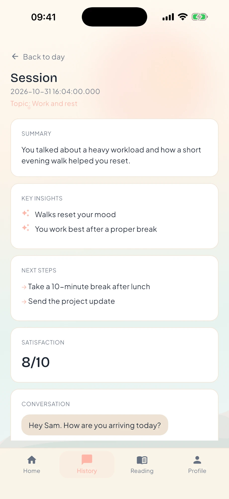
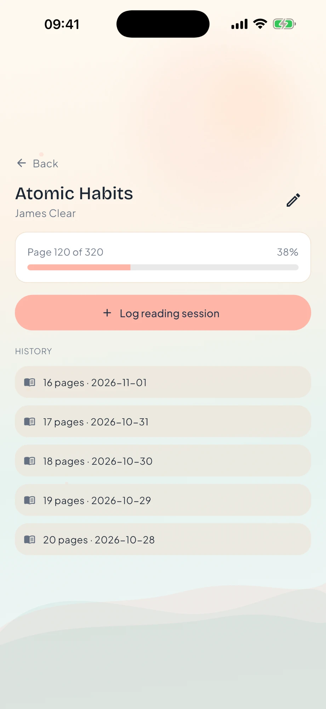
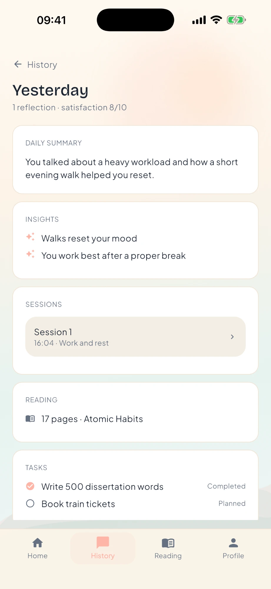
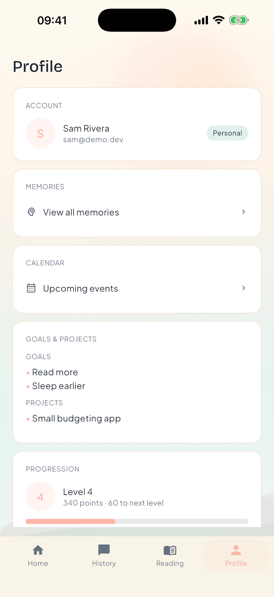
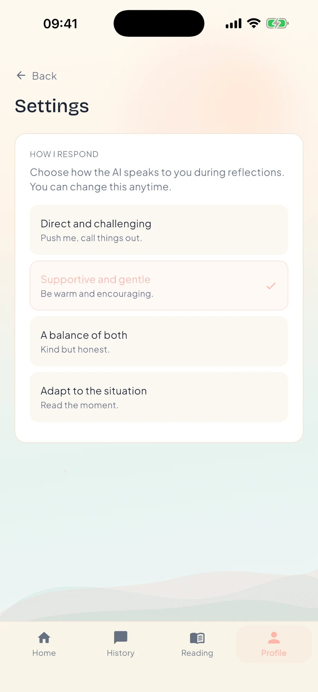

Mobile App · Flutter + Django · Invite-only launch · 2026
An AI-led guided self-reflection app for university students — a real conversation in place of a blank journal page.





Becomingly is a mobile app for guided self-reflection, built for university students. Instead of a journal with a blank page, it has an AI-led conversation that gets people to open up. A short onboarding learns your communication style. Each daily reflection then moves through phases, from a gentle opening, to exploring a topic, to going deeper, to planning the next day.
The design draws on research into how people disclose and how long they can sustain it, so it feels less like a form firing questions and more like talking to someone who listens. What you share is saved and carried forward, so each session builds on the last. Home, history, memories, tasks, and reading sections turn those reflections into something you can look back on and act on.
I designed and built the whole thing: the reflection engine, the mobile app, the API, the access-code system for invite-only launch, and the deployment to Railway. I also did the supporting market research and persona studies.